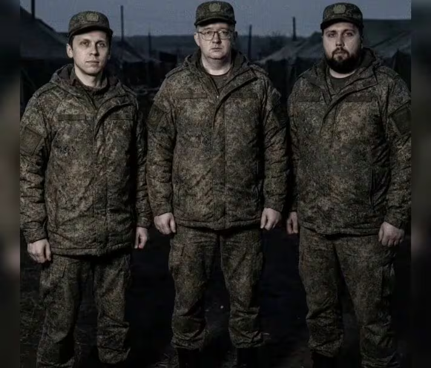

<!DOCTYPE html>
<html lang="zh-CN">
<head>
    <meta charset="UTF-8">
    <meta name="viewport" content="width=device-width, initial-scale=1.0">
    <title>米勒调查档案 · 越过群山（合并站）</title>
    <style>
        html, body { margin: 0; padding: 0; height: 100%; background: #000; }
        #view-frame { display: block; width: 100%; height: 100vh; border: 0; }
    </style>
</head>
<body>
    <!-- BGM 挂载点：后续在此文件顶层加入 <audio>，站内切换视图不会中断 -->
    <!-- 站点 BGM：按视图映射播放，站内切换视图不中断 -->
    <audio data-bgm="pd120" src="assets/pd120.wav" preload="none"></audio>
    <audio data-bgm="te" src="assets/TE.mp3" preload="none"></audio>

    <iframe id="view-frame" title="米勒调查档案 · 越过群山（合并站）"></iframe>

<script type="text/plain" id="pg-dlc2_e01">
<!-- 👁️我在看着你👁️ -->
<!DOCTYPE html>
<html lang="zh-CN">
<head>
    <meta charset="UTF-8">
    <meta name="viewport" content="width=device-width, initial-scale=1.0">
    <title>米勒的调查日志 · 第一章</title>
    <link rel="stylesheet" href="css/dlc2.css">
</head>
<body data-page="dlc2e01">

<header class="d2-top">
    <div class="d2-top-inner">
        <div class="d2-brand">
            <span class="mark">M</span>
            <span>
                <span class="t1" style="display:block;">米勒 · 寻人调查</span>
                <span class="t2">OVER THE RIDGES · 越过群山</span>
            </span>
        </div>
        <span class="d2-progress">E01 / E04 · 起因</span>
    </div>
</header>

<main class="d2-main">
    <p class="d2-kicker">MILLER&rsquo;S CASE LOG</p>
    <h1 class="d2-title">你收到了一条加密消息</h1>
    <p class="d2-subtitle">「我知道你拿了什么，也知道他在哪。来萨米见。—— 米勒」</p>

    <section class="d2-panel">
        <h2>一、找上门来的人</h2>
        <p>
            周符卿失联半个月。官方说他“平安离开”，可他的账号停在退网声明之后，再也没有动静。
            响石旅行社照常营业，只有一个人不信——米勒。
        </p>
        <p>
            米勒查了那笔异常的资金往来，顺着记录找到了你：失联前最后一支队伍里的同行者，
            收了钱的“目击者”。他站在你家门口，没有报警，只是把一张打印出来的转账记录递到你面前。
        </p>
        <div class="d2-msg">
            <span class="who">米勒</span>
            <p>“这笔钱，是皮车给你的封口费。网站的事，我一页一页看完了。现在你有两个选择：
            跟我去萨米把这件事弄清楚，或者我把这些交给警方，你按收赃和伪证处理。”</p>
        </div>
        <p>
            你选择了前者。不为别的——这些天你反复打开那个网站，越看越觉得后背发凉。
            里面写的那些“设定”，也许从来就不是设定。
        </p>
    </section>

    <section class="d2-panel">
        <h2>二、皮车的“杰作”</h2>
        <p>
            皮车不知道米勒已经掌握了全部底细。出发那天，他兴冲冲地钻进副驾，
            像一个刚做完项目汇报的博主，急着炫耀自己最得意的“整蛊策划”。
        </p>
        <div class="d2-msg red">
            <span class="who">皿良皮车</span>
            <p>“嘿嘿，米勒你不知道——那天我穿了个利刃的皮套从雪堆里跳出来，
            周哥吓得脚底一滑就滚下去了！后来那个网站就是我做的整蛊纪念。
            那笔钱？那是给他的封口费，让他配合我演这出‘失联大戏’嘛！
            还有那个退网声明，也是我拿他手机发的，直播效果拉满吧？”</p>
        </div>
        <p>
            后座上的你和驾驶座上的米勒交换了一个眼神。
            皮车说得越兴奋，你们听得越冷。他的记忆里，那是一出戏；
            但你们读过的网站里，写满了雪、黑雪、鹿尸与一具从未被找到的“尸体”。
        </p>
    </section>

    <section class="d2-panel">
        <h2>三、网站后台的乱码</h2>
        <p>
            出发前，米勒让你把网站的完整后台翻了出来。表层是解谜站点，
            但在未被皮车注意到的角落里，埋着一串串不成句的乱码。
            米勒说，那是连皮车自己都不知道自己写下的东西。
        </p>
        <div class="d2-term" id="d2-term-e01">
            &gt; session.log — 还原片段
            &gt; [00:00:00] 他没看见我。我按下开关。
            &gt; [00:00:03] 黑雪。不是道具。是真的黑。
            &gt; [00:00:07] 我听见他掉下去了。冰镐还在我手里。
            &gt; [00:00:11] 鹿。我需要一头鹿。……为什么我会知道我需要一头鹿？
            &gt; _<span class="cursor"></span>
        </div>
        <p class="d2-small">米勒把这段日志设成了你们的导航背景音。谁也没有说话。</p>
    </section>

    <div class="d2-next">
        <a class="d2-btn" href="dlc2_e02.html">向 756 号站出发 →</a>
    </div>
</main>

<footer class="d2-footer">
    E01 · 越岭寻人档案 · 未经官方确认<br>
    本页面为《明日方舟》世界观同人创作，与现实无关。
</footer>

<script src="js/main.js"><\/script>
</body>
</html>

</script>
<script type="text/plain" id="pg-dlc2_e02">
<!-- 👁️我在看着你👁️ -->
<!DOCTYPE html>
<html lang="zh-CN">
<head>
    <meta charset="UTF-8">
    <meta name="viewport" content="width=device-width, initial-scale=1.0">
    <title>米勒的调查日志 · 第二章</title>
    <link rel="stylesheet" href="css/dlc2.css">
</head>
<body data-page="dlc2e02">

<header class="d2-top">
    <div class="d2-top-inner">
        <div class="d2-brand">
            <span class="mark">M</span>
            <span>
                <span class="t1" style="display:block;">米勒 · 寻人调查</span>
                <span class="t2">OVER THE RIDGES · 越过群山</span>
            </span>
        </div>
        <span class="d2-progress">E02 / E04 · 现场</span>
    </div>
</header>

<main class="d2-main">
    <p class="d2-kicker">SITE EXAMINATION</p>
    <h1 class="d2-title">756 号站废墟</h1>
    <p class="d2-subtitle">物证不会说谎。网站也不会。</p>

    <section class="d2-panel">
        <h2>一、现场</h2>
        <p>
            废弃的 756 号站比资料照片里更残破。站外的雪线呈不自然的扇面——中型雪崩的痕迹。
            断层边缘露出断裂的冰镐，直播设备的碎片散落在乱石间，半截背带卡在石缝里。
        </p>
        <p>
            皮车站在断层边，第一次没有接话。他低头看看冰镐上的砍痕，又抬头看了看远处被雪掩埋的缓坡。
</p>
    </section>

    <section class="d2-panel">
        <h2>二、物证 × 网站文本</h2>
        <p class="d2-small">米勒把两份材料并排摊在雪地上——左边是现场物证，右边是你从网站里导出的“档案”。</p>
        <div class="d2-evid">
            <div><span class="lbl">现场物证</span><span class="fact">冰镐刃口有三次以上真实砍切痕迹；雪崩断面为自然触发痕迹。</span></div>
            <div><span class="lbl">网站文本</span><span class="site">“我按下了开关。黑雪。不是道具。”</span></div>
            <div><span class="lbl">现场物证</span><span class="fact">设备碎片呈坠落后二次撞击状态，背带被外力撕裂。</span></div>
            <div><span class="lbl">网站文本</span><span class="site">“他连同设备一起被吞没了。人不见了。”</span></div>
            <div><span class="lbl">现场物证</span><span class="fact">雪线拖痕朝东南延伸约五十米，被后期积雪覆盖。</span></div>
            <div><span class="lbl">网站文本</span><span class="site">“我不能空着手回去。我杀了路过的一头鹿。”</span></div>
        </div>
        <p>
            皮车看着看着，声音开始发颤：“我……我记得我只是割断了一根道具绳。
            怎么会有刀痕？那头鹿……那头鹿不是道具吗？”
        </p>
    </section>

    <section class="d2-panel">
        <h2>三、裂痕</h2>
        <p>
            那之后皮车的话越来越少。他反复念叨同一件事：他记得自己“跳出来吓了周哥一跳”，
            周哥“脚底一滑滚下山坡”，他“追过去发现人不见了”，于是他“做了个整蛊道具埋进雪里交差”。
        </p>
        <p>
            可每说一遍，他就停得更久。瞳孔深处，有一丝几乎看不见的紫光，开始不受控制地闪烁。
            米勒看见了。你也看见了。皮车自己没有。
        </p>
        <div class="d2-msg red">
            <span class="who">皿良皮车</span>
            <p>“不对……你们别这么看我。我真的只是……我只是想吓唬他一下——
            那个网站你们都玩过啊，那是我编的剧情！档案是我照着雪地编的！
            我怎么可能——我怎么可能真的——”</p>
        </div>
        <p>他没有说完。因为远处雪原的尽头，拖痕所指的方向，露出一座低矮的深色屋顶。</p>
    </section>

    <div class="d2-next">
        <a class="d2-btn" href="dlc2_e03.html">沿拖痕前进 →</a>
    </div>
</main>

<footer class="d2-footer">
    E02 · 越岭寻人档案 · 未经官方确认<br>
    本页面为《明日方舟》世界观同人创作，与现实无关。
</footer>

<script src="js/main.js"><\/script>
</body>
</html>

</script>
<script type="text/plain" id="pg-dlc2_e03">
<!-- 👁️我在看着你👁️ -->
<!DOCTYPE html>
<html lang="zh-CN">
<head>
    <meta charset="UTF-8">
    <meta name="viewport" content="width=device-width, initial-scale=1.0">
    <title>米勒的调查日志 · 第三章</title>
    <link rel="stylesheet" href="css/dlc2.css">
    <style>
        /* 克雷松拼图 */
        .pz-wrap { margin-top: 14px; }
        .pz-board {
            width: 324px;
            max-width: 100%;
            aspect-ratio: 1 / 1;
            display: grid;
            grid-template-columns: repeat(4, 1fr);
            grid-template-rows: repeat(4, 1fr);
            gap: 2px;
            background: #05080c;
            border: 1px solid var(--d2-line);
            border-radius: 10px;
            padding: 6px;
            margin: 0 auto;
        }
        .pz-tile {
            background-image: url("assets/头像_敌人_无垠回荡克雷松.png");
            background-size: 312px 312px;
            border-radius: 3px;
            cursor: pointer;
            transition: box-shadow .15s, transform .1s;
        }
        .pz-tile:hover { box-shadow: 0 0 0 2px rgba(127,180,216,.7); z-index: 2; }
        .pz-tile.selected { box-shadow: 0 0 0 3px var(--d2-danger); }
        .pz-tip {
            text-align: center;
            color: var(--d2-muted);
            font-size: 12px;
            margin-top: 10px;
            font-family: "Cascadia Mono", Consolas, monospace;
        }
        .pz-done {
            text-align: center;
            color: var(--d2-gold);
            font-weight: 700;
            margin-top: 10px;
            letter-spacing: 1px;
        }
    </style>
</head>
<body data-page="dlc2e03">

<header class="d2-top">
    <div class="d2-top-inner">
        <div class="d2-brand">
            <span class="mark">M</span>
            <span>
                <span class="t1" style="display:block;">米勒 · 寻人调查</span>
                <span class="t2">OVER THE RIDGES · 越过群山</span>
            </span>
        </div>
        <span class="d2-progress">E03 / E04 · 真相</span>
    </div>
</header>

<main class="d2-main">
    <p class="d2-kicker">THE DOOR</p>
    <h1 class="d2-title">科考站</h1>
    <p class="d2-subtitle">门后有人。门前的真相，比门更厚。</p>

    <section class="d2-panel">
        <h2>一、门后的声音</h2>
        <p>
            科考站外墙覆着冻霜，防爆门从内部锁死。你们刚在门前站定，
            门后忽然传来一声沙哑、戒备的怒吼——
        </p>
        <div class="d2-msg warm">
            <span class="who">门后的周符卿</span>
            <p>“别过来！外面那个……那个紫眼睛的怪物——他还在吗？！你们别信他，他眼睛会发紫光，他不是人！”</p>
        </div>
        <p>
            皮车猛地抬头：“紫眼？什么紫眼？”
            他下意识看向米勒，而米勒没有回答。米勒只是从背包里取出一面应急反光镜，
            慢慢举到皮车面前。
        </p>
    </section>

    <section class="d2-panel">
        <h2>二、克雷松的影像（拼图）</h2>
        <p>
            门内的声音让皮车僵在原地。米勒没有立刻回答，而是从背包里取出一张旧照片——
            那是你曾在污染影像里见过的面孔：<strong class="d2-danger">无垠回荡 · 克雷松</strong>。
        </p>
        <p class="d2-small">“把它拼完整。污染留下的记忆是碎的，但拼起来就能看见真相。”</p>

        <div class="pz-wrap">
            <div class="pz-board" id="pz-board"></div>
            <p class="pz-tip">点击两块碎片交换位置 · 还原完整影像</p>
            <p class="pz-done" id="pz-done" hidden>✓ 影像已还原。镜子里的，就是你。</p>
        </div>
    </section>

    <section class="d2-panel" id="mirror-section" hidden>
        <h2>三、镜子</h2>
        <p>
            反光面里，皮车看见了自己的眼睛。瞳孔深处泛着诡异的紫光，
            像冻在冰层下的两簇火。他踉跄后退，撞在科考站的外墙上。
        </p>
        <div class="d2-msg">
            <span class="who">米勒</span>
            <p>“你到 756 号站那天，无意间接触了盘踞在那里的污染体——
            无垠回荡的坍缩碎片顺着风雪爬进了你的影子。坍缩碎片平时潜伏在意识与影子里，
            不显形于瞳孔；只有当宿主的认知障被物证撕裂、情绪剧烈崩塌时，
            污染才会从潜意识溢出到虹膜——这就是为什么之前半个月谁都没看出异常。
            它放大了你的嫉妒，也接管了你拿刀的手。你以为自己只是跳出来吓人，
            可你写下的那个网站，从头到尾都是真的。”</p>
        </div>
        <div class="d2-msg red">
            <span class="who">皿良皮车</span>
            <p>“不可能……我明明只是……我只是……”</p>
        </div>
        <p>
            认知在那一刻彻底崩塌。皮车抱住头蹲下去，声音像是从喉咙深处挤出来的——
            他以为自己在做整蛊游戏，却原来每一步都踩在真实的血与雪上。
        </p>
    </section>

    <section class="d2-panel" id="suppress-section" hidden>
        <h2>四、压制</h2>
        <p>
            紫光没有熄灭，反而更亮。皮车的手指开始不受控制地抽搐，
            某种不属于他的声音仿佛要从他嗓子里爬出来。米勒挡在你身前，正要拔刀——
        </p>
        <p>
            这时你举起对讲机。米勒在 E01 就教会你调频——756 号站废墟里，
            断断续续的信号里曾经闪过一个短促的语音片段。你按下通话键，把对讲机举到门边。
        </p>
        <div class="d2-msg warm">
            <span class="who">你</span>
            <p>“周哥，我是那次和你同行的游客。你记得低地市集的集合点吗？
            你说过你选 325 是因为好记。……他还活着，他只是病了。
            你能开一下门吗？”</p>
        </div>
        <p>
            门后安静了很久。然后，是门闩转动的声音。
            防爆门打开一条缝，风雪灌进来，门缝里露出一张胡子拉碴、却活生生的脸。
        </p>
    </section>

    <div class="d2-next" id="dlc2-next" hidden>
        <a class="d2-btn warm" href="dlc2_final.html">越过群山 →</a>
    </div>
</main>

<footer class="d2-footer">
    E03 · 越岭寻人档案 · 未经官方确认<br>
    REC · PD120<br>
    本页面为《明日方舟》世界观同人创作，与现实无关。
</footer>


<script src="js/main.js"><\/script>
<script>
/* 克雷松 4x4 拼图：点击两片交换，还原后解锁下文 */
(function () {
    const board = document.getElementById('pz-board');
    if (!board) return;

    const SIZE = 4;
    const TOTAL = SIZE * SIZE;
    const CELL = 312 / SIZE;               // 背景单位
    let positions = Array.from({ length: TOTAL }, (_, i) => i);
    let selected = -1;

    // Fisher-Yates 洗牌（任意排列都可通过两两交换还原，保证可解）
    for (let i = TOTAL - 1; i > 0; i--) {
        const j = Math.floor(Math.random() * (i + 1));
        [positions[i], positions[j]] = [positions[j], positions[i]];
    }

    function render() {
        board.innerHTML = '';
        positions.forEach((pieceId, slot) => {
            const r = Math.floor(pieceId / SIZE);
            const c = pieceId % SIZE;
            const tile = document.createElement('div');
            tile.className = 'pz-tile';
            tile.dataset.slot = slot;
            tile.style.backgroundPosition = (-c * CELL) + 'px ' + (-r * CELL) + 'px';
            if (slot === selected) tile.classList.add('selected');
            tile.addEventListener('click', () => onPick(slot));
            board.appendChild(tile);
        });
    }

    function onPick(slot) {
        if (selected === -1) {
            selected = slot;
            render();
            return;
        }
        if (selected === slot) {
            selected = -1;
            render();
            return;
        }
        const a = positions[selected];
        positions[selected] = positions[slot];
        positions[slot] = a;
        selected = -1;
        render();
        checkDone();
    }

    function checkDone() {
        const done = positions.every((v, i) => v === i);
        if (done) {
            document.getElementById('pz-done').hidden = false;
            document.getElementById('mirror-section').hidden = false;
            document.getElementById('suppress-section').hidden = false;
            document.getElementById('dlc2-next').hidden = false;
            const mirror = document.getElementById('mirror-section');
            setTimeout(() => mirror.scrollIntoView({ behavior: 'smooth', block: 'start' }), 300);
            // 只允许成功一次后锁定面板交互（视觉上留下完整影像）
            board.style.pointerEvents = 'none';
            board.style.opacity = '.72';
        }
    }

    render();
})();
<\/script>
</body>
</html>

</script>
<script type="text/plain" id="pg-dlc2_final">
<!-- 👁️我在看着你👁️ -->
<!DOCTYPE html>
<html lang="zh-CN">
<head>
    <meta charset="UTF-8">
    <meta name="viewport" content="width=device-width, initial-scale=1.0">
    <title>越过群山 - TRUE END</title>
    <link rel="stylesheet" href="css/dlc2.css">
</head>
<body data-page="dlc2final">

<div class="d2-final">
    <p class="d2-kicker" style="color:var(--d2-gold);">TRUE END</p>
    <h1 class="d2-final-title">越过群山</h1>
    <p class="d2-final-sub">OVER THE RIDGES · 全员生还</p>

    <div class="d2-final-para">
        周符卿坠落时被地下树根网住，只是左腿骨折。他顺着根系摸到这座有应急补给的科考站，
        靠罐头与融雪撑了半个月——通讯设备在坠落时摔坏，他甚至不知道自己已经“被退网”。
        <br><br>
        门开后，四个人围着科考站的炉子坐下。皮车当着周符卿的面，把他做过的事一件一件说了出来：
        利刃皮套、黑雪装置、鹿尸、封口费、那个由潜意识写成的网站——然后他跪了下去。
        <br><br>
        周符卿沉默了很久，最后踢了他一脚：
        “你小子就算没中邪也不是什么好东西。但老子命大没死，号也被你搞退网了——
        第一你先替我顶着，等我腿好了再抢回来。”
        <br><br>
        米勒把网站后台作为医疗记录提交给平台，撤销了不当得利的榜单排名，
        并证明了周符卿的存活。皮车身上的污染被压制但未根除——
        米勒试遍了能想到的办法，最后只能硬着头皮去请那位独眼巨人。
        <br><br>
        凛视盯着皮车看了很久，只问了一句：“你欠的不止一条命。”
        她花了三天，把那缕坍缩的紫光从皮车瞳孔里彻底拔除。
        皮车昏睡了一整天，醒来后做的第一件事，是把网站的管理权限转交给米勒，
        第二件事是问：“周哥的号……能还给他了吗？”
        <br><br>
        <span class="d2-gold">—— 响石那边米勒已经联系过了。得知鹿尸真相后她沉默了很久，
        最终去更正了客户记录，妥善处理了那片雪地。提丰收到了简报，
        知道人没死就行，这会儿还守在站点上。至于凛视——
        她说那三天里，皮车喊了一百多次周哥的名字，她信他不会再犯了。</span>
        <br><br>
        但是雪崩并非完全没有代价。调查队进行搜寻后，
        在雪崩处发现三名遇难的乌萨斯军人。
        <figure class="d2-final-figure">
            
            <figcaption class="d2-final-note">分别为：安东·尤丁采夫（Антон Юдинцев）、
            维亚切斯拉夫·巴兰尼科夫（Вячеслав Баранников）、尼基塔·布亚诺夫（Никита Буянов）。
            让我们为三位悼观。</figcaption>
        </figure>
        而米勒把网站最后一页，改成了现在的样子。
        <br>
        一哥安全归来。兄弟冰释前嫌。
        <br>
        越过群山之后，太阳照常升起。
    </div>

    <div class="d2-final-stamp">TRUE END · 越过群山</div>
</div>

<footer class="d2-footer">
    E04 · 终章 · 本页面为《明日方舟》世界观同人创作，与现实无关。
</footer>

<script src="js/main.js"><\/script>
<script>
if (window.DlcStore) {
    DlcStore.set('dlc2_completed', '1');
}
<\/script>
</body>
</html>

</script>

    <script src="js/router.js"></script>
    <script>
window.__ZFQ_CONFIG__ = {
  siteFile: 'miller.html',
  defaultFile: 'dlc2_e01.html',
  fallbackFile: 'dlc2_e01.html',
  pages: [{id: 'dlc2_e01', file: 'dlc2_e01.html'}, {id: 'dlc2_e02', file: 'dlc2_e02.html'}, {id: 'dlc2_e03', file: 'dlc2_e03.html'}, {id: 'dlc2_final', file: 'dlc2_final.html'}],
  cross: {},
  bgmMap: {'dlc2_e01': 'pd120', 'dlc2_e02': 'pd120', 'dlc2_e03': 'pd120', 'dlc2_final': 'te'},
  bgmAssets: {'pd120': {file: 'pd120.wav', volume: 0.01, gap: 5000}, 'te': {file: 'TE.mp3', volume: 0.08, gap: 0}}
};
window.__ZFQ_PAGES__ = {'dlc2_e01': {id: 'dlc2_e01', file: 'dlc2_e01.html'}, 'dlc2_e02': {id: 'dlc2_e02', file: 'dlc2_e02.html'}, 'dlc2_e03': {id: 'dlc2_e03', file: 'dlc2_e03.html'}, 'dlc2_final': {id: 'dlc2_final', file: 'dlc2_final.html'}};

    </script>
</body>
</html>
